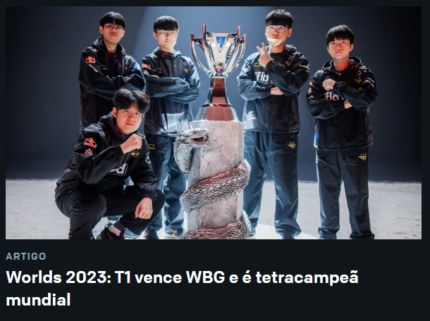

O caminho que a T1 precisou seguir para se consagrar Campeã Mundial de League Of Legends 2023.
O campeonato aconteceu no estádio de beisebol Gocheok Sky Dome, em Seul, na Coreia do Sul.

O campeonato aconteceu no estádio de beisebol Gocheok Sky Dome, em Seul, na Coreia do Sul.
A LPL (Liga chinesa de league of legends) era a favorita nesse mundial, sendo considerados os mais fortes.
Nas quartas de finais restavam apenas 3 times da LCK (KT: Kt Rolster, GEN.G E T1: Team One), contra 4 times da LPL (JDG: JingDong Gaming, WBG: Weibo Gaming, BLG: Bilibili Gaming e LNG: Suzhou LNG Esports).
A JDG eliminou a KT ainda nas quartas de finais.
A GEN.G foi eliminada pela BLG, restando agora apenas a T1, contra 4 times chineses.
Agora tudo estava na mão da T1, o único time coreano que restou. Com o campeonato acontecendo em solo coreano, uma final de LPL vs LPL era um desastre para todos os coreanos que acompanhavam o mundial.
Ainda assim, a T1 avança para a semi final, enfrentendo a LNG, que muitos acreditavam estar mais forte que a T1.
Porém, a T1 consegue uma vitória de 3x0, dando muitas esperanças aos coreanos, e avançando para a semi final, onde enfrentariam os favoritos do ano, a JDG.
Com uma série histórica no mundial, a T1 vence a JDG por 3x1 e avança para a final, onde vai enfrentar o ultimo oponente da LPL, a WBG.
Com uma série perfeita, a T1 vence a WGB por 3x0 e conquista o 4° título mundial de League Of Legends.
Com uma campanha que ficou marcada na história, tendo derrotados todos os times da LPL, a BLG antes das quartas de finais, a LNG, nas quartas de finais, a JDG na semi final e a WBG na final, somente a BLG não foi eliminada pela T1, mas foi derrotada pela mesma.